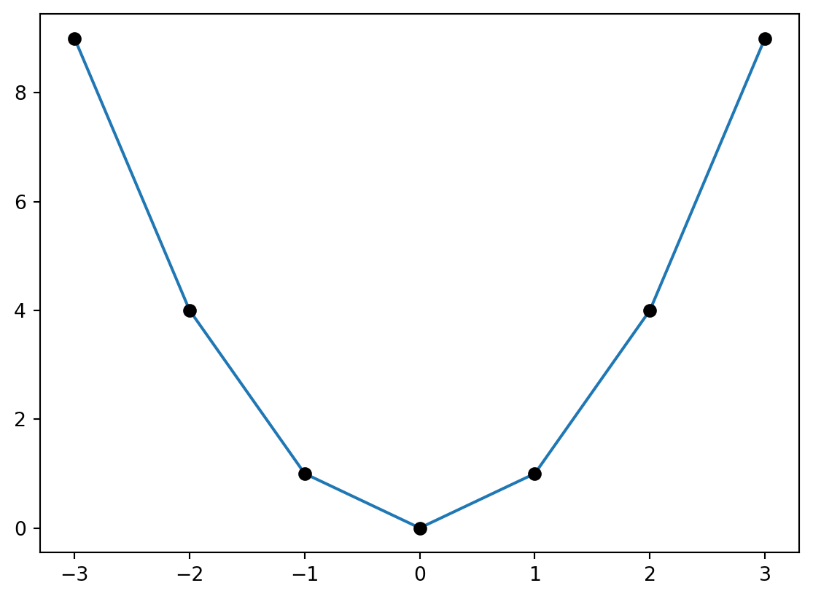
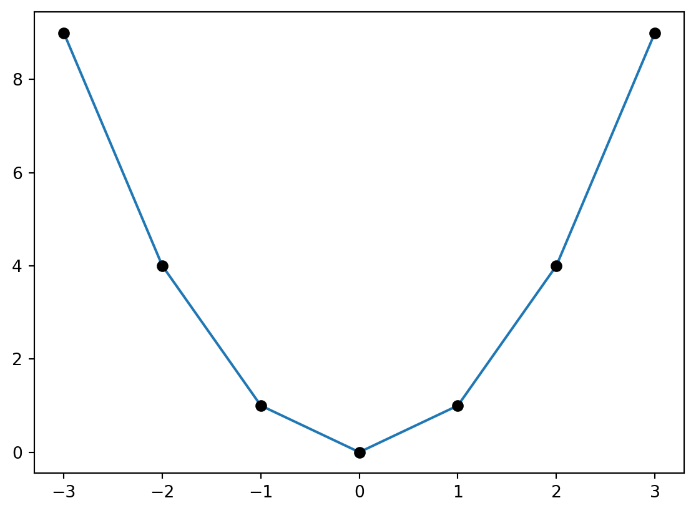
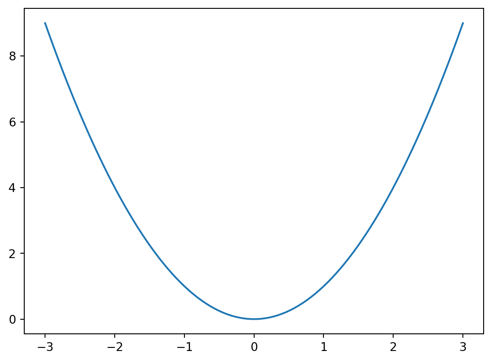
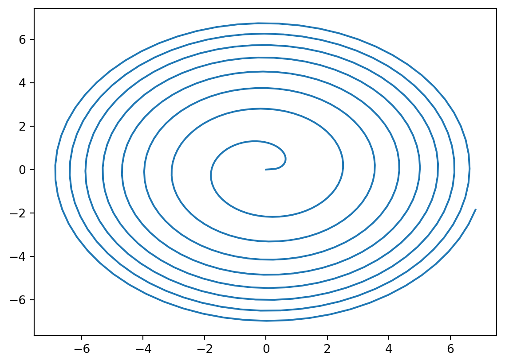
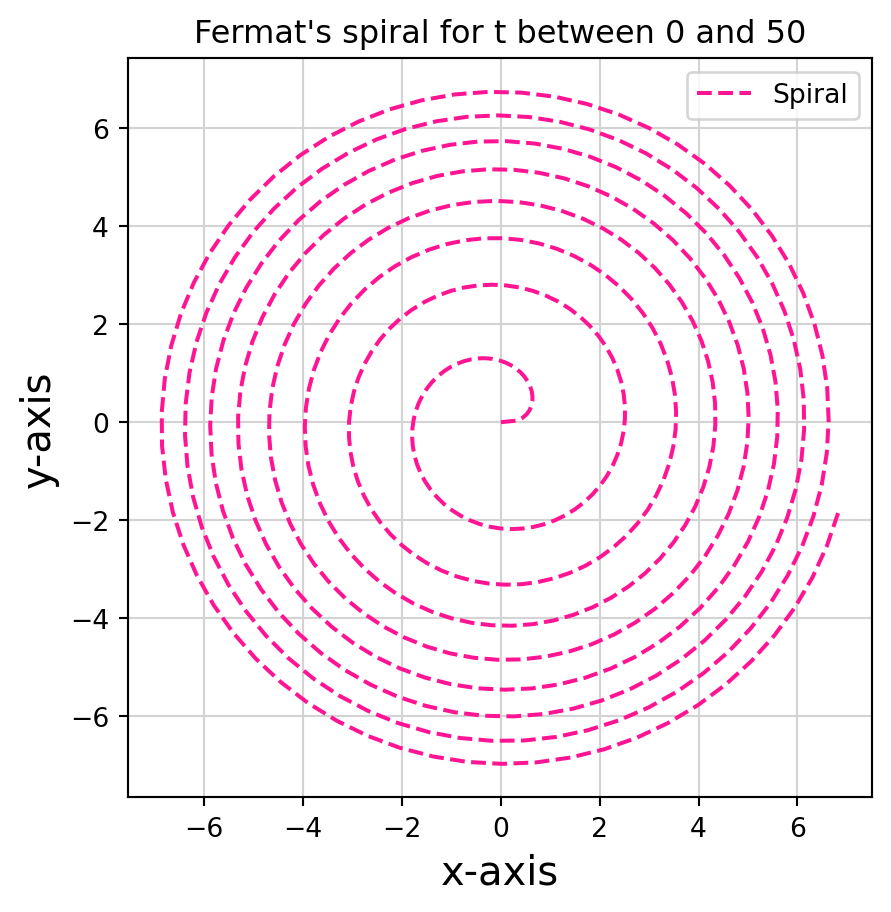
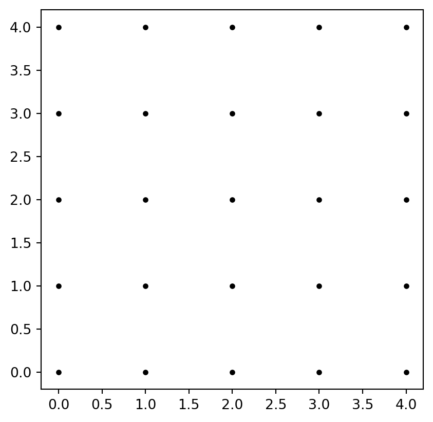
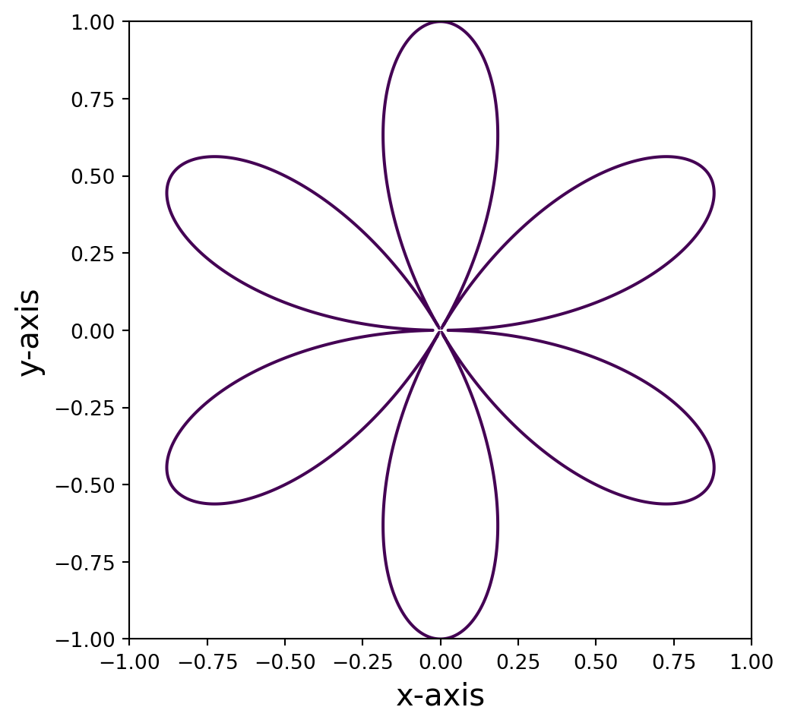

# Code for plotting gamma
import numpy as np
import matplotlib.pyplot as plt
t = np.array([-3,-2,-1,0,1,2,3])
f = t**2
plt.plot(t,f)
plt.plot(t,f,"ko")
plt.show()
Suppose we want to plot the parabola \(y=t^2\) for \(t\) in the interval \([-3,3]\). In our language, this is the two-dimensional curve \[ \gamma(t) = ( t, t^2 ) \,, \quad t \in [-3,3] \,. \] The two Python libraries we use to plot \(\gamma\) are numpy and matplotlib. In short, numpy handles multi-dimensional arrays and matrices, and can perform high-level mathematical functions on them. For any question you may have about numpy, answers can be found in the searchable documentation available here. Instead matplotlib is a plotting library, with documentation here. Python libraries need to be imported every time you want to use them. In our case we will import:
The above imports numpy and the module pyplot from matplotlib, and renames them to np and plt, respectively. These shorthands are standard in the literature, and they make code much more readable.
The module for plotting 2D graphs is called plot(x,y) and is contained in plt. As the syntax suggests, plot takes as arguments two arrays \(x=[x_1, \ldots, x_n]\) and \(y=[y_1,\ldots,y_n]\). As output it produces a graph which is the linear interpolation of the points \((x_i,y_i)\) in \(\mathbb{R}^2\), that is, consecutive points \((x_i,y_i)\) and \((x_{i+1},y_{i+1})\) are connected by a segment. Using plot, we can graph the curve \(\gamma(t)=(t,t^2)\) like so:
# Code for plotting gamma
import numpy as np
import matplotlib.pyplot as plt
t = np.array([-3,-2,-1,0,1,2,3])
f = t**2
plt.plot(t,f)
plt.plot(t,f,"ko")
plt.show()
Let us comment the above code. The variable t is a numpy array containing the ordered values \[
t = [-3,-2,-1,0,1,2,3]\,.
\tag{1.1}\] This array is then squared entry-by-entry via the operation \(t\ast\!\ast 2\) and saved in the new numpy array f, that is, \[
f = [9,4,1,0,1,4,9] \,.
\] The arrays t and f are then passed to plot(t,f), which produces the above linear interpolation, with t on the x-axis and f on the y-axis. The command plot(t,f,'ko') instead plots a black dot at each point \((t_i,f_i)\). The latter is clearly not needed to obtain a plot, and it was only included to highlight the fact that plot is actually producing a linear interpolation between points. Finally plt.show() displays the figure in the user window1.
Of course one can refine the plot so that it resembles the continuous curve \(\gamma(t)=(t,t^2)\) that we all have in mind. This is achieved by generating a numpy array t with a finer stepsize, invoking the function np.linspace(a,b,n). Such call will return a numpy array which contains n evenly spaced points, starts at a, and ends in b. For example np.linspace(-3,3,7) returns our original array t at Equation 2.1, as shown below
t = [-3. -2. -1. 0. 1. 2. 3.]In order to have a more refined plot of \(\gamma\), we just need to increase \(n\).
# Plotting gamma with finer step-size
import numpy as np
import matplotlib.pyplot as plt
t = np.linspace(-3,3, 100)
f = t**2
plt.plot(t,f)
plt.show()
Let us now plot something more interesting, such as the two-dimensional curve known as the Fermat’s spiral \[
\gamma(t) = ( \sqrt{t} \cos(t) , \sqrt{t} \sin(t) ) \quad
\text{ for } \quad t \in [0,50] \,.
\] Clearly we need to modify the above code. The variable t will still be a numpy array produced by linspace. We then need to introduce the arrays x and y which ecode the first and second components of \(\gamma\), respectively.
# Plotting Fermat's spiral
import numpy as np
import matplotlib.pyplot as plt
t = np.linspace(0,50, 500)
x = np.sqrt(t) * np.cos(t)
y = np.sqrt(t) * np.sin(t)
plt.plot(x,y)
plt.show()Before displaying the output of the above code, a few comments are in order. The array t has size 500, due to the behavior of linspace. You can also fact check this information by printing np.size(t), which is the numpy function that returns the size of an array. We then use the numpy function np.sqrt to compute the square root of the array t. The outcome is still an array with the same size of t, that is, \[
t=[t_1,\ldots,t_n] \quad \implies \quad \sqrt{t} = [\sqrt{t_1}, \ldots, \sqrt{t_n}] \,.
\] Similary, the call np.cos(t) returns the array \[
\cos(t) = [\cos(t_1), \ldots, \cos(t_n)] \,.
\] The two arrays np.sqrt(t) and np.cos(t) are then multiplied, term-by-term, and saved in the array x. The array y is computed similarly. The command plt.plot(x,y) then yields the graph of the Fermat’s spiral:

The above plots can be styled a bit. For example we can give a title to the plot, label the axes, plot the spiral by means of green dots, and add a plot legend, as coded below:
import numpy as np
import matplotlib.pyplot as plt
t = np.linspace(0,50, 500)
x = np.sqrt(t) * np.cos(t)
y = np.sqrt(t) * np.sin(t)
plt.figure(1, figsize = (5,5))
plt.plot(x, y, "--", color="deeppink", linewidth=1.5, label="Spiral")
plt.grid(True, color="lightgray")
plt.title("Fermat's spiral for t between 0 and 50")
plt.xlabel("x-axis", fontsize = 15)
plt.ylabel("y-axis", fontsize = 15)
plt.legend()
plt.show()
Let us go over the novel part of the above code:
plt.figure(): This command generates a figure object. If you are planning on plotting just one figure at a time, then this command is optional: a figure object is generated implicitly when calling plt.plot. Otherwise, if working with n figures, you need to generate a figure object with plt.figure(i) for each i between 1 and n. The number i uniquely identifies the i-th figure: whenever you call plt.figure(i), Python knows that the next commands will refer to the i-th figure. In our case we only have one figure, so we have used the identifier 1. The second argument figsize = (a,b) in plt.figure() specifies the size of figure 1 in inches. In this case we generated a figure 5 by 5 inches.plt.plot: This is plotting the arrays x and y, as usual. However we are adding a few aestethic touches: the curve is plotted in dashed style with --, in deep pink color and with a line width of 1.5. Finally this plot is labelled Spiral.plt.grid: This enables a grid in light gray color.plt.title: This gives a title to the figure, displayed on top.plt.xlabel and plt.ylabel: These assign labels to the axes, with font size 15 points.plt.legend(): This plots the legend, with all the labels assigned in the plt.plot call. In this case the only label is Spiral.There are countless plot types and options you can specify in matplotlib, see for example the Matplotlib Gallery. Of course there is no need to remember every single command: a quick Google search can do wonders.
There are several ways of generating evenly spaced arrays in Python. For example the function np.arange(a,b,s) returns an array with values within the half-open interval \([a,b)\), with spacing between values given by s. For example
A curve \(\gamma\) in \(\mathbb{R}^2\) can also be defined as the set of points \((x,y) \in \mathbb{R}^2\) satisfying \[ f(x,y)=0 \] for some given \(f \colon \mathbb{R}^2 \to \mathbb{R}\). For example let us plot the curve \(\gamma\) implicitly defined by \[ f(x,y) =( 3 x^2 - y^2 )^2 \ y^2 - (x^2 + y^2 )^4 \] for \(-1 \leq x,y \leq 1\). First, we need a way to generate a grid in \(\mathbb{R}^2\) so that we can evaluate \(f\) on such grid. To illustrate how to do this, let us generate a grid of spacing 1 in the 2D square \([0,4]^2\). The goal is to obtain the 5 x 5 matrix of coordinates \[ A = \left( \begin{matrix} (0,0) & (1,0) & (2,0) & (3,0) & (4,0) \\ (0,1) & (1,1) & (2,1) & (3,1) & (4,1) \\ (0,2) & (1,2) & (2,2) & (2,3) & (2,4) \\ (0,3) & (1,3) & (2,3) & (3,3) & (3,4) \\ (0,4) & (1,4) & (2,4) & (3,4) & (4,4) \\ \end{matrix} \right) \] which corresponds to the grid of points

To achieve this, first generate x and y coordinates using linspace(0,4, 5). We would then obtain coordinates \[
x = [0, 1, 2, 3, 4] \,, \quad y = [0, 1, 2, 3, 4] \,.
\] We then need to obtain two matrices \(X\) and \(Y\): one for the \(x\) coordinates in \(A\), and one for the \(y\) coordinates in \(A\). Thus \[
X = \left(
\begin{matrix}
0 & 1 & 2 & 3 & 4 \\
0 & 1 & 2 & 3 & 4 \\
0 & 1 & 2 & 3 & 4 \\
0 & 1 & 2 & 3 & 4 \\
\end{matrix}
\right) \,, \quad
Y =
\left(
\begin{matrix}
0 & 0 & 0 & 0 & 0 \\
1 & 1 & 1 & 1 & 1 \\
2 & 2 & 2 & 2 & 2 \\
3 & 3 & 3 & 3 & 3 \\
4 & 4 & 4 & 4 & 4 \\
\end{matrix}
\right)
\]
If now we plot \(X\) against \(Y\) via the command
we obtain Figure 1.1. This would be very tedious to do with large vectors. Thankfully there is a function in numpy doing exactly what we need: np.meshgrid.
# Demonstrating np.meshgrid
import numpy as np
xlist = np.linspace(0, 4, 5)
ylist = np.linspace(0, 4, 5)
X, Y = np.meshgrid(xlist, ylist)
# np.array2string is only needed to align outputs
print('X =', np.array2string(X, prefix='X= '))
print('\n')
print('Y =', np.array2string(Y, prefix='Y= '))X = [[0. 1. 2. 3. 4.]
[0. 1. 2. 3. 4.]
[0. 1. 2. 3. 4.]
[0. 1. 2. 3. 4.]
[0. 1. 2. 3. 4.]]
Y = [[0. 0. 0. 0. 0.]
[1. 1. 1. 1. 1.]
[2. 2. 2. 2. 2.]
[3. 3. 3. 3. 3.]
[4. 4. 4. 4. 4.]]Now that we have our grid, we can evaluate the function \(f\) on it. This is simply done with the command
# Plotting f=0
import numpy as np
import matplotlib.pyplot as plt
xlist = np.linspace(-1, 1, 5000)
ylist = np.linspace(-1, 1, 5000)
X, Y = np.meshgrid(xlist, ylist)
Z =((3*(X**2) - Y**2)**2)*(Y**2) - (X**2 + Y**2)**4
plt.figure(figsize = (5.5,5.5))
plt.contour(X, Y, Z, [0])
plt.xlabel("x-axis", fontsize = 15)
plt.ylabel("y-axis", fontsize = 15)
plt.show()
If you have understood how to plot 2D curves in Section 1.1.1, then plotting 3D curves will not be much more difficult.
The command plt.show() can be omitted if working in Jupyter Notebook, as it is called by default.↩︎